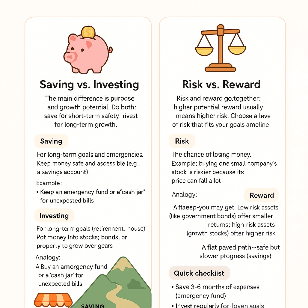

Beginner Stock Market Course
A beginner's course on the stock market is designed to provide you with the fundamental knowledge and skills needed to start investing.
Key Concepts You'll Learn
- Introduction to Investing:
Hey there! üëã Thinking about your money and how to make it grow is a smart move.
Let's explore the fundamental concepts of **saving versus investing**, and the crucial relationship between **risk and reward**. Understanding these ideas is the first step toward building a solid financial future.
Saving vs. Investing
The main difference between saving and investing is **purpose** and **growth potential**.
-
Saving
This is for **short-term goals** and emergencies. When you save, you're putting money in a place that's safe and easily accessible, like a savings account. The primary goal is to **preserve your principal** (the money you put in). Because it's so safe, the returns are very low. Your money won't grow much, and in some cases, its purchasing power might even decrease over time due to inflation.
-
Investing
This is for **long-term goals**, like retirement or buying a house years down the line. When you invest, you're putting your money into assets like stocks, bonds, or real estate with the goal of **growing your wealth significantly** over time. Investing comes with a greater chance of returns, but also more risk.
The key takeaway is that you should do both. **Save for the short term, and invest for the long term.**
Risk vs. Reward
Risk and reward are two sides of the same coin in the world of investing. They are directly linked: to get a higher potential reward, you usually have to take on more risk.
-
Risk
This is the possibility of losing some or all of your money. Different investments have different levels of risk. For example, a savings account has almost no risk, while investing in a single company's stock is much riskier. The value of the stock could go up, or it could go down significantly.
-
Reward
This is the potential return on your investment, or how much money you could make. The more risk you take, the higher the potential reward. Investments with lower risk, like government bonds, offer lower returns. Investments with higher risk, like growth stocks, offer the potential for much higher returns.
Think of it like this: A savings account is like taking a stroll on a flat, paved path. It's safe, but you won't get anywhere fast. Investing in a volatile stock is like hiking up a steep mountain trail. It's more challenging and there's a chance you could stumble, but the view from the top could be incredible.
The goal is to find a level of risk you're comfortable with that aligns with your financial goals and timeline. It's about finding the right balance for you. ⚖️
-
- Understanding the Stock Market:
NSE, BSE, IPO, primary/secondary market.
The stock market can sound complicated, but let's break it down using some simple, real-life examples.
Imagine a giant online shopping website, but instead of clothes or electronics, people are buying and selling tiny pieces of companies. This is the stock market.

The Marketplaces: NSE and BSE
Think of these as the two biggest online stores in India for trading stocks.
-
NSE (National Stock Exchange)
This is like a modern, high-tech marketplace. The Nifty 50 is its most popular list, showing how the top 50 biggest companies are doing.
Example: If you hear "Nifty 50 is on a high," it means companies like Reliance and TCS are generally doing well.
-
BSE (Bombay Stock Exchange)
This is the oldest marketplace, like a trusted, traditional bazaar. The Sensex is its main list, tracking how 30 very well-known companies are performing.
Example: If the Sensex is "up," it means the total value of these 30 companies—like Infosys and HDFC—has increased.
The "New Product Launch": IPO
An IPO (Initial Public Offering) is when a company sells its shares to the public for the very first time. It's like a brand new product hitting the market.
Example: Before Zomato was a public company, only its founders and a few investors owned it. When they did their IPO, they were essentially saying, "Hey everyone, you can now buy a small part of our company!"
Buying From the Company vs. Buying From Others: Primary and Secondary Markets
There are two ways to buy stocks:
-
Primary Market
This is the first sale. You are buying directly from the company itself during its IPO. The money you pay goes straight to the company.
Example: When you applied to buy Zomato shares during its IPO, you were in the primary market. You bought the shares directly from Zomato.
-
Secondary Market
This is every sale after the first one. You're buying shares from another person who already owns them. The company doesn't get any money from this sale; it just changes hands between two investors. The NSE and BSE are these secondary markets.
Example: A few months after the Zomato IPO, you decide to buy some more shares. You go on a trading platform and buy them from another investor who is selling. This happens in the secondary market. The money goes to the other investor, not to Zomato.
- Key Terminology: Bull/bear market, dividends, IPOs.
- Types of Investments: Stocks, mutual funds, ETFs.
- Analysis Methods: Fundamental & technical analysis.
- Setting Up Your Account: Opening a Demat and trading account.
- Building a Strategy: Goals, risk tolerance, diversification.
- Risk Management: Avoiding common mistakes.
Before You Begin
- Set Clear Goals: Know your why.
- Understand Your Risk Tolerance: Be realistic.
- Practice with a Simulator: Try virtual trading.
- Start Small: Use money you can afford to lose.
-